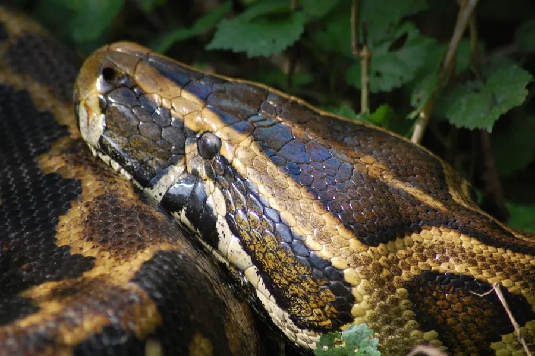

爬行动物 · 动物界
非洲岩蟒 Python sebae

非洲体型最大的蛇类之一，体长可超过 5 米，性情凶猛、绞杀力强，捕食羚羊、鳄鱼等大型猎物。
- 分类
- 门脊索动物门纲爬行纲目有鳞目科蟒科属蟒属
- 栖息环境
- 非洲撒哈拉以南的稀树草原、草原、河岸与灌丛
- 地理分布
- 非洲撒哈拉以南大部分地区
- 保护级别
- IUCN 无危（LC）；CITES 附录 II；非中国原产
物种志
非洲岩蟒体长 3–5 米，个别记录超过 6 米，体重可达 90 千克，是非洲最大的蛇类之一。它身体极粗壮，头部宽大呈三角形，唇部有热敏感的唇窝；体色以灰褐或黄褐为底，背部有深褐色不规则的斑块，头部有箭头状斑纹，腹部淡黄。
它分布于非洲撒哈拉以南的草原、稀树草原和河岸地区，多在夜间活动，捕食鼠类、羚羊、野猪、鸟类，也能捕食鳄鱼和巨蜥，靠强大的绞杀力使猎物窒息。每年 3–6 月繁殖，雌蟒产卵 20–100 枚，盘在卵上孵卵约 60–90 天。它因体型和皮革被大量捕杀，也被当地居民视为危险动物；目前野外种群整体尚较稳定，被列为无危物种，但国际贸易受国际公约监管。
形态与习性
- 食性鼠类、羚羊、野猪、鸟类，也捕食鳄鱼
- 体长3–5 m，最长记录超过 6 m
- 体重可达 90 kg
- 寿命约 20–30 年
- 繁殖卵生，20–100 枚，孵化 60–90 天
- 活动节律夜行性，善游泳
趣味知识
- 非洲岩蟒是非洲最大的蛇类之一，体重可达 90 千克。
- 它的绞杀力极强，能捕食羚羊甚至鳄鱼等大型猎物。
- 非洲岩蟒性格凶猛，野外遇到时应保持距离，不要靠近。